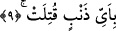

gönderin. Allah bu kızlara daha lâyıktır, derlerdi.
Keşşaf ’ta olay şöyle aktarılıyor: Araplardan herhangi bir kimsenin kızçocuğu dünyaya
geldiğinda şâyet onu sağ bırakmak istiyorsa kendisine yünden veya kıldan bir elbise
giydirirdi. O kız da ona çölde deve veya koyun güdüverirdi. Şâyet onu öldürmek isterse
altı yaşına gelinceye kadar sağ bırakırdı. Bu yaşa geldiğinde annesine dönerek; “kızı
süsle ve güzel kokularla kokulandır, onu akrabasına götüreceğim” derdi. Daha sonra
kızını yanına alır, çölde önceden kazmış olduğu kuyunun yanına götürür ve ona; “kuyuya
bak” diyerek çocuğu kandırır, sonra da arkasından itekler toprak seviyesine gelinceye
dek üzerini toprakla doldururdu.
Bazılarına göre hâmile olan arap kadını doğumu yaklaştığında bir çukur kazar ve
doğum sancısını o çukurun başında çekerdi. Doğum olayı gerçekleşip de kız
doğurduğunda onu hemen çukura yuvarlar, oğlan doğurduğunda ise yanına alırdı.
9. Hangi günahtan ötürü öldürüldüğü sorulduğunda,
Yani; diri diri toprağa gömülen kıza -adâletini ortaya koymak için- bizzat Allah’ın
kendisi veya onun emriyle görevlendirdiği bir melek, aklen ve naklen katledilmesini
gerektiren hangi günahtan dolayı öldürüldüğünü sorduğunda… Bu kızı diri diri bizzat
babası öldürmüş olacağı gibi, babanın öldürme izni verdiği bir başkası da öldürmüş
olabilir.
Burada suâlin doğrudan doğruya toprağa diri diri gömülen kıza yöneltilmesi, ona
teselli vermek ve Allah’ın onu toprağa gömen kişiye ne kadar gazap duyduğunu ortaya
çıkarmak içindir. Bunun yanında; suâlin o kıza yöneltilmesi, kızı toprağa gömen
kimsenin kendisine hitap edilmeyecek derecede düşük bir kişi olduğuna işâret etmek ve
onu susturma noktasında ifâdeye bir mubalağa ve abartı katmak içindir.
Nitekim buna benzer ifâde ve üslûba başka sûrelerde de rastlıyoruz. Bir örnek olarak
şu âyet-i kerimeyi verelim: “Allah: Ey Meryem oğlu İsa! İnsanlara, “beni ve anamı,
Allah’tan başka iki tanrı bilin” diye sen mi dedin buyurduğu zaman o “haşa! seni
tenzih ederim... dedi” (Maide 5/116) İşte bundan dolayı Allah Teâlâ, kızı diri diri
toprağa gömen babaya onu neden katlettiğini sormuyor da bizzat kıza soruyor.
İfadede bir de “babayı susturma” unsurundan söz edilmişti. Susturma meselesini biraz
açmak gerekirse; herhangi bir saldırıya uğramış mağdur kimseye, kendisine saldıran
câninin huzurunda soru sorulduğunda ve cinâyet doğrudan doğruya câniye değil de
mağdûra nisbet olunduğunda, bu üslub, câniyi hem kendi durumu hem de mağdurun
durumu hakkında düşünmeye sevkeder. Böylece o, hasmının berâatini tercih eder. Sonra
bu durum, câninin bizzat kendisinin cezâlandırılmaya lâyık olduğu noktasında
düşünmesine yol açar. İşte bu bir çeşit cezâya yaklaştırmadır ve ta’riz yoluyla meydana